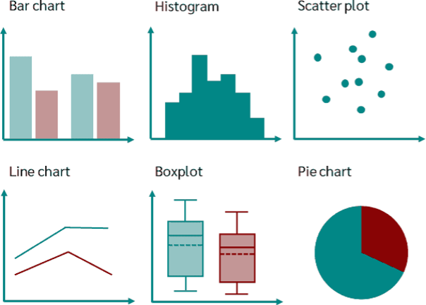
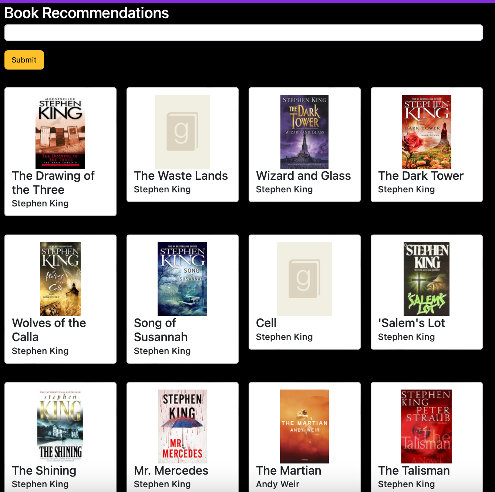

February 7, 2024
I am a data scientist and educator with a strong background in mathematics.
For the last six years, I have been teaching mathematics at the college level
and have found it immensely rewarding to help students understand the complexities of mathematics.
I discovered data science while completing my M.S. in Mathematics and found a passion for explaining
data science to a non-technical audience and using data to assist in business growth and development.
Since then, I completed an intensive data science boot camp through Springboard in 2023 and have been doing freelance
work for a big data company.
If your company is in need of a data scientist with technical skills suchs as python and SQL, a deep understanding of machine learning
and data analytics, as well as strong communication skills, I’d love to connect with you!
Developed a machine learning model to predict the likelihood of hotel booking cancellations. By identifying bookings with a higher probability of cancellation, hotels can target them with enticing incentives, such as complimentary meals, extended stays, or other services provided by the hotel, in order to encourage guests to retain their bookings.

This projects aims to address the educational barriers faced by millions of students with learning, physical, or visual disabilities preventing them engaging with visuals in STEM . Using a convolution neural network to classify the chart type and YOLO object detection to extract data, graphs depicted in images are converted in a digital format.

In this project, I built a book recommendation system using data from Goodreads and built a simple web application to go alongside it!
As a data scientist, one of the most basic yet essential skills needed is the ability to match/join two separate tables (or datasets). Sometime there will be a key column that makes the joining process fairly simple. But how can we join two tables when there is not a unique identifier column? This is where we can use fuzzy matching. Check out my blog post describing how to do this in python!
Working on cloud based instances is essential in the world of big data that we live in today. Read my blog post to see how to set up Amazon's EC2 instance easily!
Object detection is a computer vision technique that allows for the detection of objects in images and videos. This process is made easy by using YOLOv8!